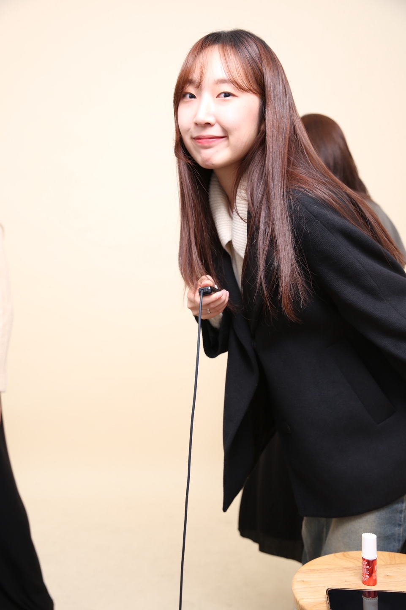
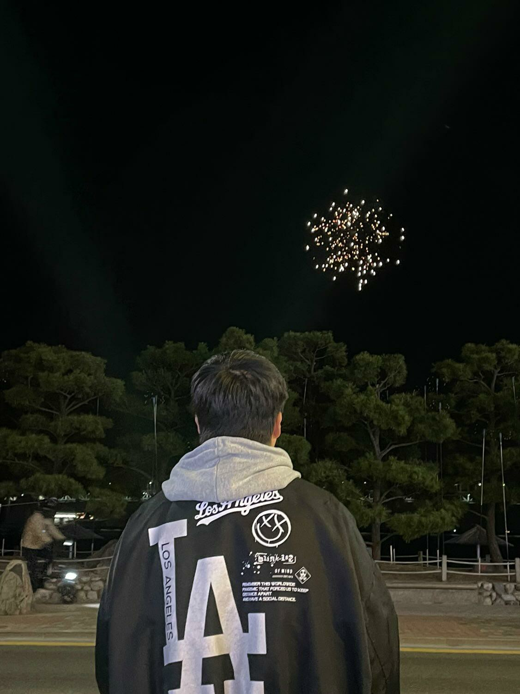
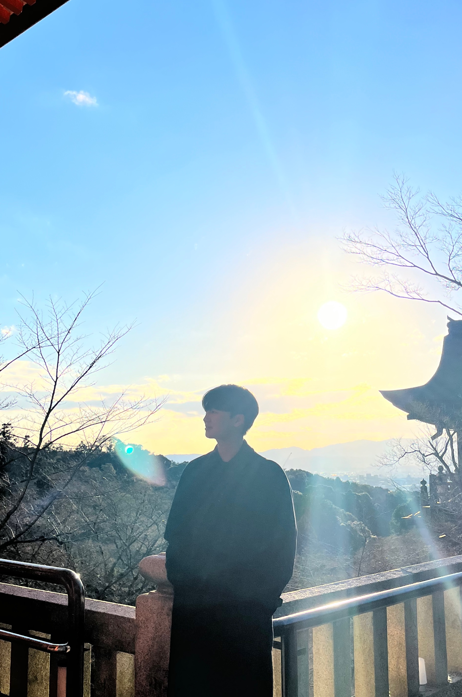

チーム名の意味
「和い」というチーム名の意味は、和合と調和を重視する日本の「和文化」を意味する「和い」と、英語の質問「why?」の両方の意味があります。
インタビューの相手に対し、「知りたい」という思いを込めることと同時に、
日本の文化を尊重することを含めるために努力しました。
プロジェクトの目的・成果
実際の日本の方とインタビューを行うことで、日本語実力の向上をはかりました。
また、ウェブサイト制作プロジェクトを通し、ITに関する関心や実力を養うことができました。
さらに、学生から離れてこれから社会に向けて進むことに対した不安を克服し、より成長することができました。

「青海進大学2025」
Members


